| 日付 | 2026年11月14日（土） |
|---|---|
| 山域 | 丹沢 |
| メンバー | 単独 |
| 山行形態 | 日帰り |
| アクセス | 車 |
| ルート (Map) | 玄倉駐車場 (7:11) - (7:39) 小川谷出合 - (8:28) 敷地山 - (8:54) 芋ノ沢ノ頭 - (9:38) 大タギリ - (9:59) 大タル山 - (10:17) 女郎小屋ノ頭 - (10:52) 東沢乗越 - (11:23) 同角キレット - (11:43) ヒデ沢ノ頭 - (12:10) 同角ノ頭 (12:17) - (12:55) 同角山稜分岐 - (13:26) 石棚山分岐 - (14:22) 林道 - (14:53) 小川谷出合 - (15:23) 玄倉駐車場 |
玄倉の駐車場に到着。標高330m。
昨年、同角山稜に登った時以来、1年振りの訪問。
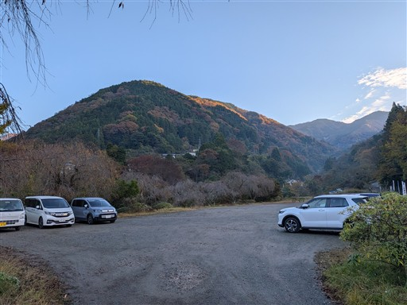
富士山がちょこっとだけ見える。
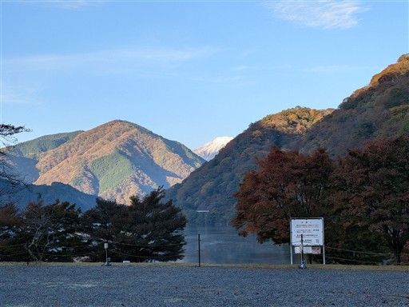
静かな丹沢湖。釣り人がいる。
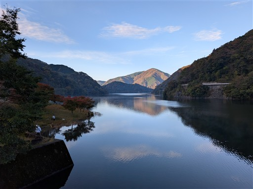
ここから林道を歩いていく。本日はあまり長く林道を歩かなくても良い。
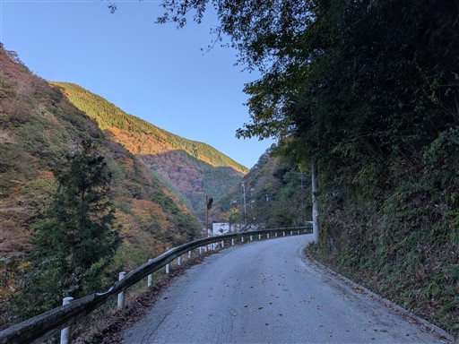
警戒音を鳴らしてシカが山の斜面を逃げていく。
鈴を鳴らしているのに、ここまで近づかないと気づかないのか？
さすが、丹沢のシカは人慣れしていて、遠くまでは逃げていかない。
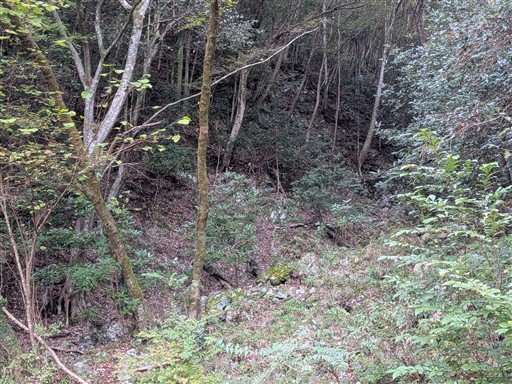
車も人も通らないだろうと思っていたら、まさかのダンプ到来。
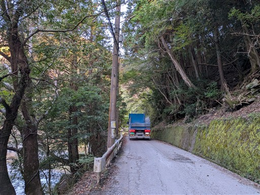
見えているのはどの辺りなんだろう？
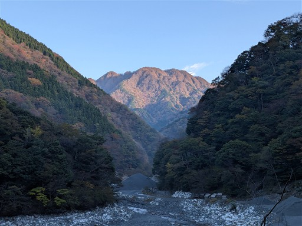
玄倉林道は歩行者も含めて通行止め。ここから左の道に入って行く。
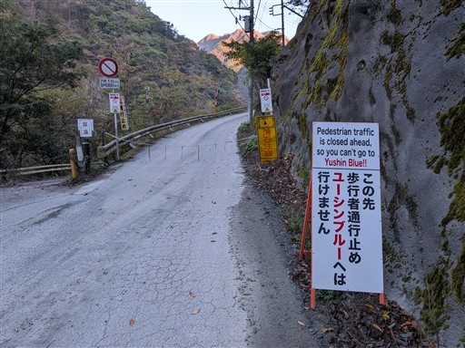
橋を渡ってこの標識のところで沢沿いへ。
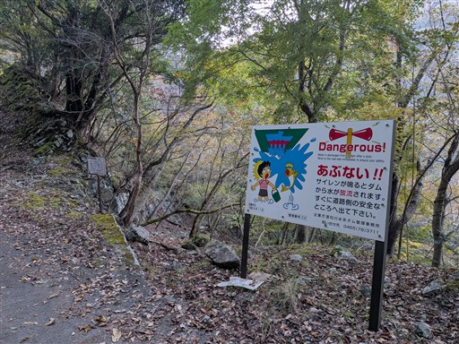
渡渉ポイントがなかなか見つからない。
大人しく靴を脱げばよいのだが、靴を濡らさずに渡るポイントを探して余計に時間がかかってしまった。
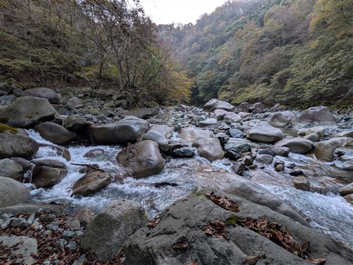
この辺りから山に入る。明瞭な踏み跡がある。
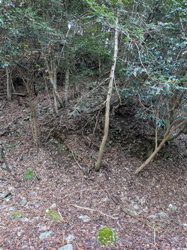
急斜面を登りきると尾根の上に出る。
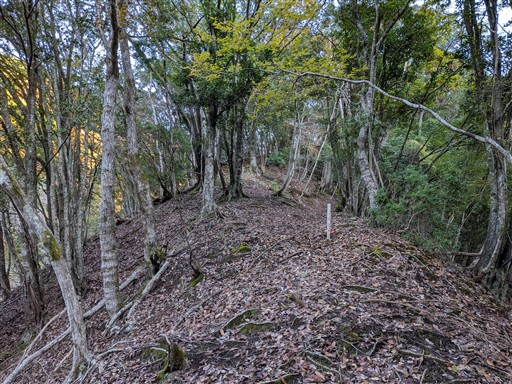
なんと木段が現れる。ここの登山道が整備されたのはいつ頃なのだろう？
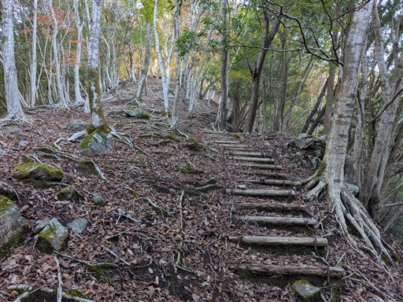
ところどころ鹿柵が現れる。結構邪魔だ。
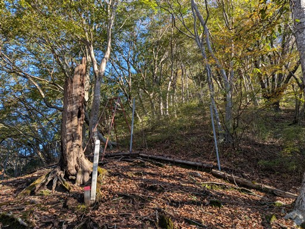
植林地帯。あまり歩いていて楽しい道ではない。
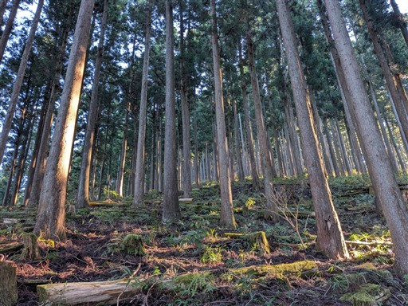
敷地山に立ち寄る。標高687m。
標識も展望も何もないピークだ。
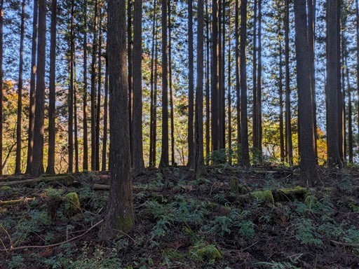
ミツマタがところどころにある。
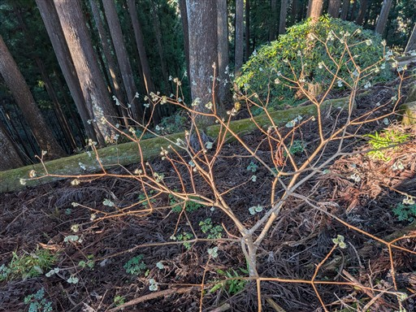
この辺りは穏やかな尾根。
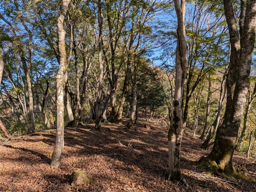
尾根全体が苔に覆われている。あまり歩く人は多くないのだろう。
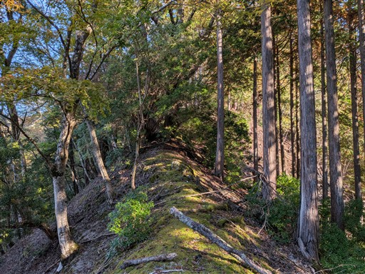
芋ノ沢ノ頭山頂は鹿柵に囲まれていて入れない。
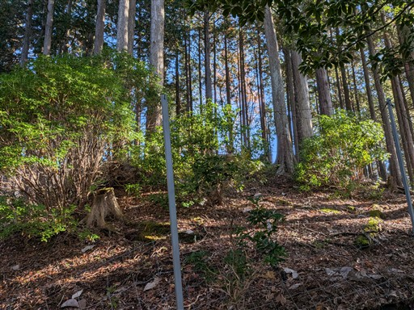
右側から迂回するがトラバース道が歩きにくい。左側から迂回した方が良かったか。
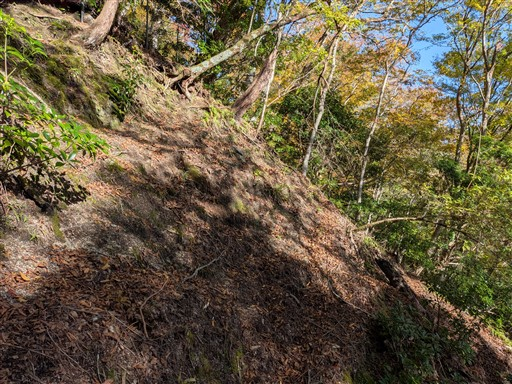
標高1000m付近がちょうど紅葉が見頃だ。
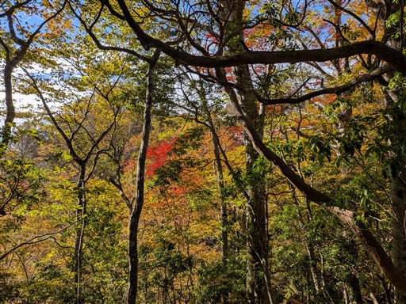
白砂で覆われた丸いピーク。この少し手前でグループ登山者と出会う。
大きな荷物で、犬越路まで行くそうだ。すごい。
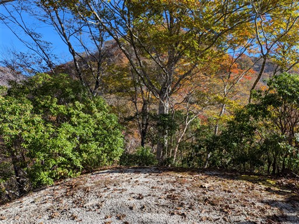
大タギリに到着。まっすぐ行っても道は無く、ロープをつたって右側から下りる。
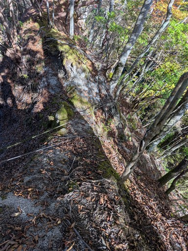
切れ落ちたキレット。崖を下りて崖を登るという感じ。
狭すぎてうまく写真が撮れない。
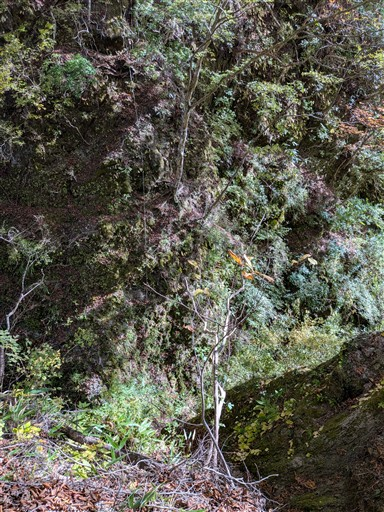
キレットの底からV字状の谷を見る。
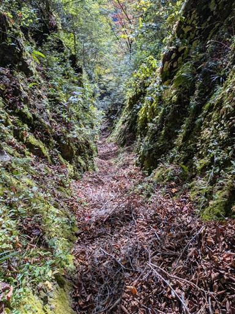
そしてここから登る尾根、というか崖。
ロープが無いととてもじゃないが登れない。
上の方の岩場はロープがあっても難しい。
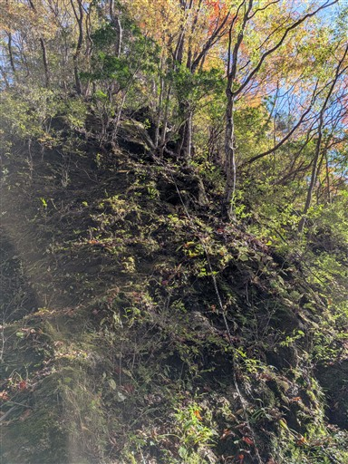
急な坂を登り切ってようやく平和な道になる。
歩いているときは先ほどの場所が小タギリだと思っていて、
この後にもう一段難しい場所が来ると思ってドキドキしながら歩く。
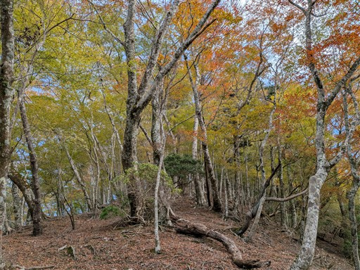
大タル山の標識。標高1031m。同角尾根にある数少ない山頂標識。
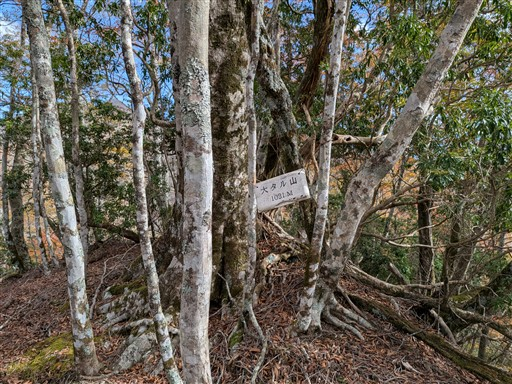
イワシャジンの花がところどころに咲いている。
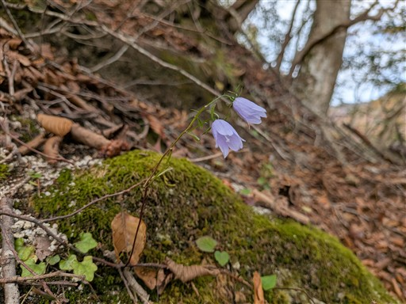
地形的にここが大タギリだと思っていたが、特に何でもない場所だった。
ここは女郎小屋乗越という場所のようだ。
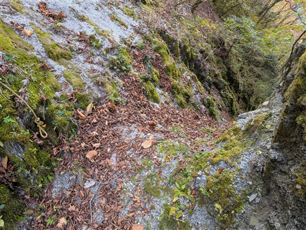
ここから落ちていく沢。
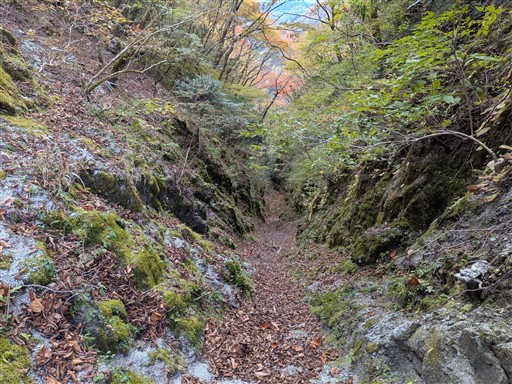
登り返しも楽勝。ロープがあるが無くても問題ないレベル。
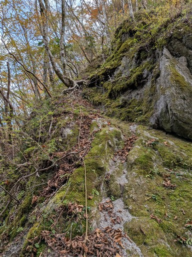
振り返って女郎小屋乗越を見下ろす。
たまたま歩きやすかっただけで、地形的には凄まじいキレットだ。
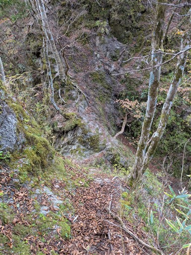
きれいな紅葉が広がっている。だいぶ雲が広がってきた。
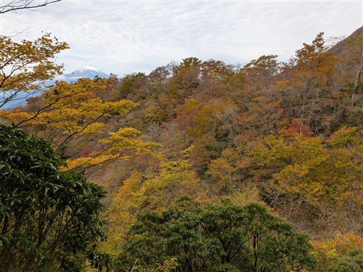
この辺りが女郎小屋ノ頭。標高1080m。
標識は見当たらなかった。
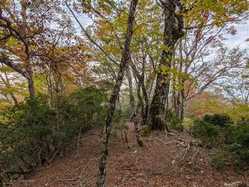
その先のキレット。こんな地形が続く。
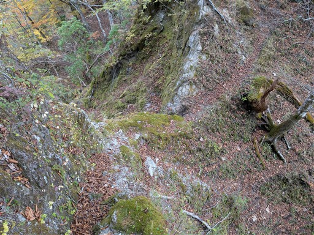
ここも痩せ尾根。
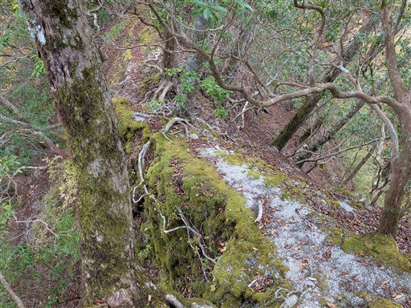
ここも痩せ尾根。どこ歩いたんだっけ？
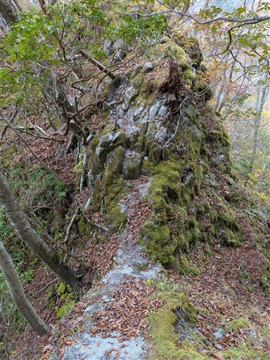
東沢乗越に到着。ドーカク尾根の標識がある。
同角尾根はここまでで、ここから先の同角ノ頭まで行く尾根は同角尾根とは呼ばないのだろうか？
登山記録を見てもここから下山している人が結構多い。
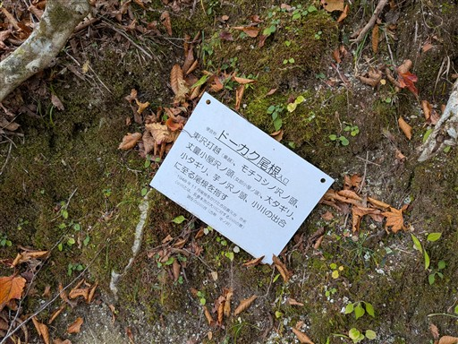
標識には小川谷は危険なので大石山に下山するように書かれている。
どっちもどっちな気がするが。
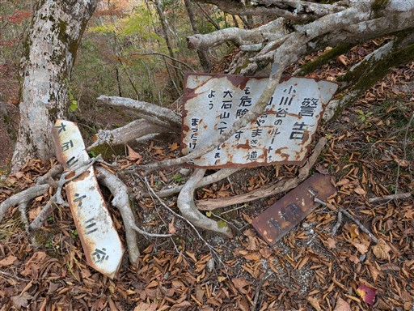
小川谷ルートの入口。
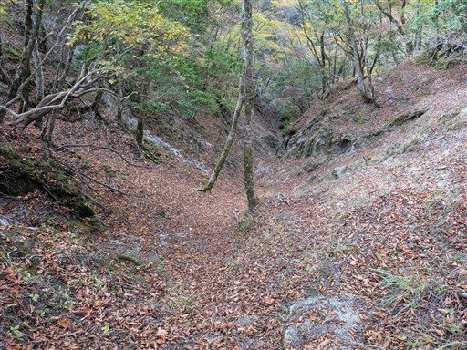
これまでの痩せ尾根が嘘のような穏やかな道。
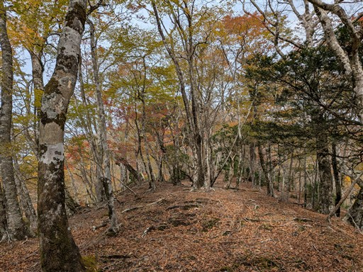
しばらく歩くとあっという間に痩せ尾根になる。
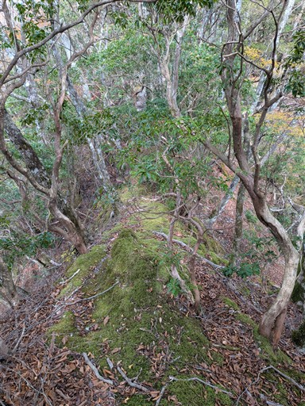
尾根が切れ落ちている。道がない。
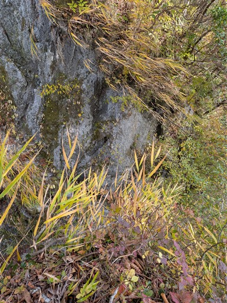
右側から回り込んで下りる。自然が作ったとは思えない地形。
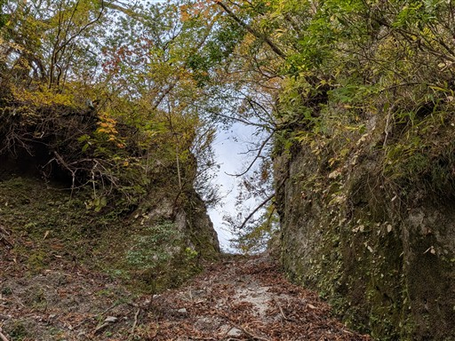
尾根に乗る場所を探す。良い場所が見つからないが目の前の落葉が積もった斜面を登る。
木や根があまりなく、かなり登りにくい。
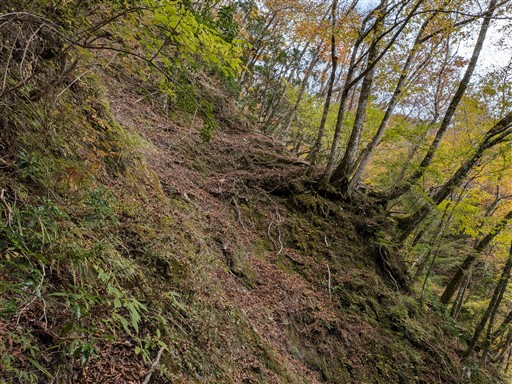
その後も急傾斜の尾根が続く。
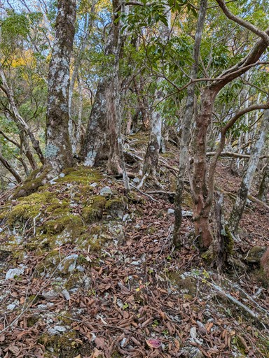
ヒデ沢ノ頭に到着。
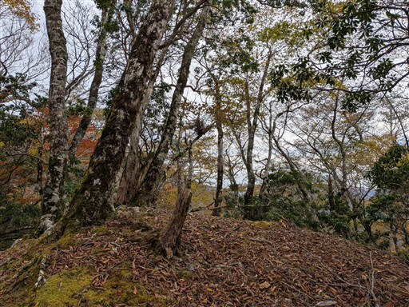
この辺りから穏やかな尾根になる。もう危険個所はないだろう。
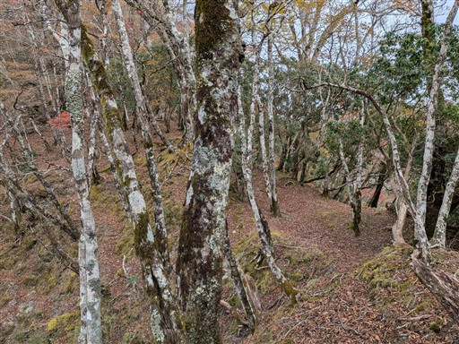
傾いている大きな木。
最後の同角ノ頭に登り上げる場所は岩がちな尾根。
同角ノ頭に到着。標高1491m。
日没リスクを恐れて速めに歩いたため、まあまあの時間に到着できた。
これなら十分に日没前に下山できるだろう。
ベンチに座って少し休憩する。
ここからは歩きやすい尾根。
富士山が見えている。かなり厚い雲が広がってきている。
しっかりした木段が整備されている。
同角山稜分岐に到着。以前はここから檜洞丸を往復したが、本日は大人しくそのまま下山。
箒沢と玄倉との分岐点。以前は右を行った。本日は左へ。
玄倉まで6.3km。遠い。
石が散乱した落ち葉の道。
この尾根、難しい。斜面が急で、道もほとんど見えない。
植林地帯に入っても急斜面の道は変わらず。
箒沢公園橋への道とは異なりかなりマニアックな道だ。
これは何だろう？
紅葉の尾根道を進む。
紅葉の尾根道というより蜘蛛の巣の尾根道。
両サイドの柵が蜘蛛の巣を張る格好の土台になっている。
乗っただけで崩壊しそうな古そうな橋を迂回する。
苔生した石畳の道。ほとんど歩く人はいなさそう。
林道に下山。
これは水場？やかんが置いてある。
長い林道をトボトボと歩いていく。
法面の下から水が湧き出している。透明の水で見づらいが結構な水量だ。
往路の沢に下りた地点まで戻ってきた。
玄倉川。相変わらずきれいな色をした沢だ。
丹沢湖。まだ釣りをしている人がいる。この辺りはまだ紅葉が始まったばかり。
玄倉バス停に戻ってくる。
同角尾根はなかなか手ごたえのある尾根だった。
決して歩いていて楽しい尾根ではなかったが、挑戦という意味で一回行っておくのはありだろう。
特に大タギリは見た目も歩行難易度もインパクトのある場所だった。